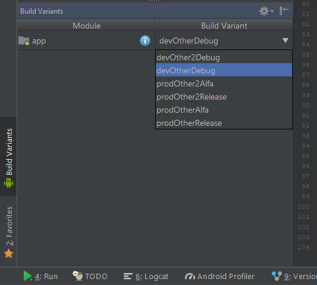

This is first part in series of articles about Android build configuration, all parts will be linked right below.
Build configuration!
This is not the most exciting part of software engineering. Each technology, language, framework has it’s own rules so there are no universal patterns, Uncle Bob will not help us here. But just like this worker on left, tightening the screw of Empire State Building skeleton, developers should polish their builds - build config itself is not the application (like skeleton is not the building), but application is useless if you cannot build release version. It also sucks if you have to wait minutes until build is finished, or manually change config for releases.
In Android Studio you start new project, type app name and select minimum SDK and Android Studio generates some files that you don’t event want to touch. But you should. The more complex app you are working on, bigger benefits you may get. Starting from faster builds, through work automation, to easer development and releasing process.
Types and Flavors
After we create new project we already have 2 build variants to select: debug and release. Even if only second one is mentioned in build.gradle file in buildTypes section.
We can easily edit or add more build types and product flavors, creating way too many build variants we need. Each build type is by default combined with each product flavor, and product flavors are combined if they are defined for different dimensions.
Above build types and product flavors your config should also have defaultConfig - just to avoid repeating yourself in build types or flavors.
But what are build types and product flavors even for?
Build Types
The same app, different builds
If you want to build exactly the same app (same look, same features etc.) but sometimes you need to debug it, sometimes you want to build release, sometimes you want different signing configuration, switched on/of Proguard and Crashlytics - separate those variants with build types.
Build types can kinda inherit from each other, for example: you have release build type and want to have alpha build that is exactly the same BUT with different app name. No need to copy-paste whole config:
Product Flavors
The same build, different app - like bubble gum, same process of creating product, but you can have many flavors (mint, fruit etc.)
If your business model requires free, demo, premium app variants, you need apps in different color schemes, you want to build release app but talking with staging server (bit debatable - it could be also a build type but IMO if it talks with different server, its a different app), you want to build the same app but with different IAP (in app purchases) for different app shops, or you build your app with different features for specific client - use product flavors for separating those variants.
Product flavors are scoped with flavorDimensions. Each flavor needs to be in one dimension, flavors from same dimension are excluding each other from build variant. For example:
Above configuration will give us variants: devOtherDebug, prodOtherDebug, devOther2Debug, prodOther2Debug - and the same for release build type, but you wont see devProdDebug or devOtherOther2Debug.
Please notice that build type name comes always on the end - order of names is important. It is similar to CSS, each dimension added to variant overrides previous settings with it’s own, and then build type sets them on the end. Just remember this mechanism only overrides settings, it does not clear them.
If you have no idea what is build variant, its this thing you select here:

More info about build types and product flavors can be found at this StackOverflow post
Dealing with Flavor Hell
So if you enthusiastically started adding flavors and build types to your config you should notice one thing: number of build variants grows at a geometric rate. Each new flavor in existing dimension adds number of build types to build variants, each new dimension doubles number of build variants. And it’s really hard to find this one variant you need to build fast in this jungle.
Reducing number of dimensions or flavors is not really a solution if they were created according to business needs - if they are not you may consider rethinking this whole division.
What you should do is ask yourself a question: do I really need ALL of those build variants? If you are releasing Alpha build from your CI server, you don’t really need dev flavor. Also dev flavor (will be explained later) makes sense only with debug build.
There are many cases that cause certain build variants to be pointless, so lets filter them out!
Using simple if statement that checks variant build type and flavors we can set them to be ignored. Take a note that variant.getFlavors() returns list of flavors added by dimension order, that’s why I’ve used get(0) to get first dimension flavor - stage in my case.
Build settings
Ok we have build types and product flavors, we’ve filtered out pointless variants but what can we actually set? Official BuildType documentation mentions whole a lot of properties and methods that can be used for each build type. There’s even more in Official ProductFlavor documentation, but there are also many in common, so remember that build type will override those set in flavor. Oh also here is Official DefaultConfig documentation, because some properties are available only here, nobody said it will be easy.
I won’t be going through all of above mentioned properties and methods, I’ll just show what can be done with some of them.
applicationId
This one is pretty important. By applicationId your app is recognized in Google Play Store and on Android device. You cannot have 2 different apps with same appliationId on the same device or in Google Play Store - even from different accounts. You may have noticed that if you have your app installed from Google Play (official release) and want to install debug version from Android Studio it will ask to remove Google Play app - yes it’s because different signing (with Android debug key) and even debug version installed from one machine will need to be erased if you install it from other machine. But because both apps have same applicationId Android will know it’s the same app. And if we want to keep our released and configured app on our device and have debug build installed next to it?
Well we need to change applicationId of debug build type of course!
If you’ve looked through documentation you may have noticed that there is no way to change applicationId in build type config, it’s set only in defaultConfig (and product flavors). But there is property applicationIdSuffix - it will add text to our applicationId. You can set it like:
Keep official release of your app and install debug just next to it.
buildConfigField
During build process a static BuildConfig class is created. This class contains fields like APPLICATION_ID, VERSION_CODE, VERSION_NAME and others taken from - you’ve guest it - build config. Those fields are easily accessible in app, and are often used to modify it’s behavior like turning off Google Analytics if app is in debug mode. We can add custom fields to this class in both build types and product flavors. Method takes 3 String arguments - type, name and value.
Those custom fields type can be String, boolean, int, long, float and double. If you set the same field in flavor and build type, it will be overridden with build type value.
resValue
Setting custom BuildConfig field is cool, but it is also possible to add resource value. If you try to set a value that already exists in resources, you will get Error: Duplicate resources during build. Method looks similar to buildConfigField
Types are diferent thant for buildConfigField and you can use: array, attr, bool, color, declare-styleable, dimen, fraction, id, integer, plurals, string, style but most common will be string, bool, dimen, integer I guess
manifestPlaceholders
There is one last place where we might want to set things according to our build variant - the manifest. Sometimes in manifest you need to add API key to some services used by libraries like Fabric, you may want to have a different keys for different build variants and this is a clean solution - no more checking BuildConfig and setting stuff in huge switch statement. I like to use manifestPlaceholders to set app name - for release builds (or by default) it is taken from resources because it may vary in different languages, but for debug build… I don’t care so much about languages, I just want to know that it is debug build. It can be also achieved by creating src/{buildTypeName | productFlavorName} directory and adding string.xml with app name string there for each build type or flavor we want to switch app name… but if you don’t change a lot of resources in build variants keeping changes in build config looks cleaner.
and in AndroidManifest.xml
android:label="${appName}"
There is also more complex usage of manifestPlaceholders and buildConfigField at Android docs that might be useful.
versionNameSuffix
Ever been an app beta tester? So you might seen version names like 1.2.3-build-1223123-RC in system application settings. It can be added by using versionNameSuffix property in both product flavors and build types. Of course build number should be generated automatically, but this will be done in some future post.
resConfigs
Sometimes you add new language to your app and you need to test how bad your layouts will look with it. No need to change your device language - it’s a pain if you don’t know new language enough to go back to your native one… just force build variant to use specific resources:
You can specify list of all possible resource configurations including screen density - but it won’t allow you do to it if you use APK density split.
Also it shouldn’t be used with build type pseudoLocalesEnabled property.
Splits
Let’s say you have an app with lots of images (not SVG) in few screen densities so app looks good on every device. But you build single APK for all densities, so each user needs to download app with way more resources than will ever be used. Splits are here to save the day. It allows Gradle to generate multiple APK files of the same build variant but with single resources for density, language or ABI (Application Binary Interface). Google Play just sends fitting APK to user that want to download your app.
Above code will cause generation of 16 (5 densities * 3 ABI + universal APK) APK files, fitting exactly users device specs. More bitmap graphics your app uses, bigger gains in APK size will you get.
In split config we have to specify if it’s enabled, and then we use reset() to clear default density or ABI list. Then we can include array of values (ABI or densities) - or if you don’t want to reset default one you can just exclude some with array of unwanted values. universalApk takes boolean argument and in my case it’s generated for release build only, it contains all of resources and is compatible with all ABI - this file will be size of your app without using splits.
I don’t really see a point in using language split since strings.xml are lightweight files, but it’s also possible. Also ABI split may be just overcomplicating your build process.
It’s worth mentioning that for each APK you want to release you need to generate different versionCode or Google Play wont allow you to send it.
In above code I check for which ABI and density variant is being build, multiply position of variant ABI in abiList by 10 and add this number and variant density position in densityList to version code for current build. Example: default version code is 1230000 (needs to be < 2 100 000 000) and current split variant is x86 xxhdpi, so we have 1230000 + 30 + 4 = 1230034.
End of part #1
It’s top of an iceberg but I’ve tried to explain main building blocks of Android build configuration. In upcoming posts I’ll show some build time optimizations and useful scripts to generate values used in builds. Below you can find links to documentation or blogposts that might extend this topic furthermore.
Useful links